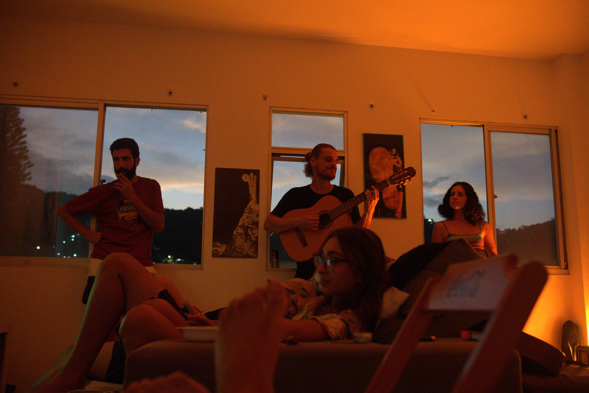
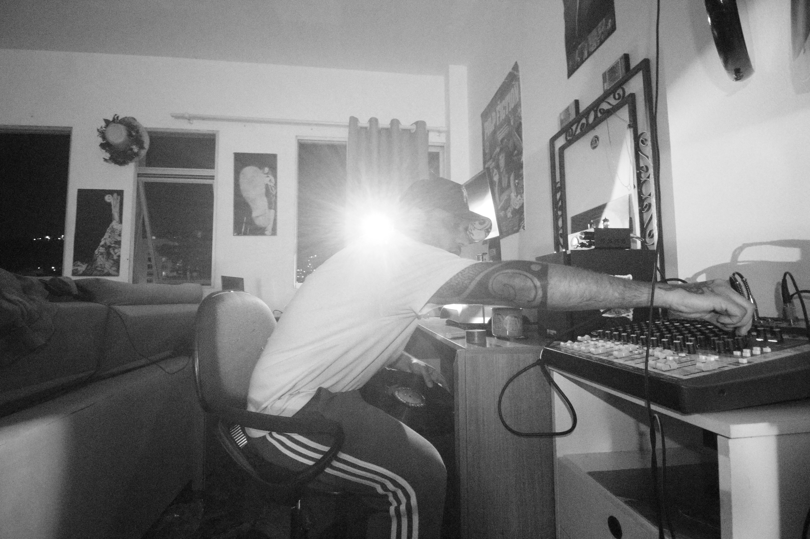

"A rua tem a vivência. A sala tem o aconchego."
Conheça o projetoArte na Sala é um canal audiovisual dedicado a dar voz e imagem a artistas independentes que constroem sua arte na rua, no underground, na margem criativa da cultura urbana.
Aqui, cada gravação é uma peça única — pensada, dirigida e produzida com cuidado artístico real. É um registro que respeita sua arte e projeta sua imagem para o mundo.
Captação profissional com direção de cena e som. Uma produção completa que registra sua arte com a seriedade que ela merece.
Fotos de alta qualidade para uso livre — redes sociais, divulgação, portfólio. Sua imagem nas mãos certas.
Publicação e promoção do conteúdo nas redes do canal. Seu trabalho chega a quem precisa ver.
Um apartamento. Mas não qualquer um.
Fica no Saco dos Limões, num pedaço de Florianópolis onde prédio e rancho de pescador dividem a mesma calçada. Um bairro que vive entre o mar e a cidade — e que carrega esse equilíbrio estranho e bonito no dia a dia.
Com o tempo, músicos, poetas e artistas foram chegando. Cada um deixou alguma coisa — uma ideia solta, uma batida que ficou na cabeça, uma conversa que rendeu mais do que devia. O espaço foi absorvendo tudo isso naturalmente, sem que ninguém planejasse.
Virou ponto de encontro. Estúdio às vezes. Arena de troca sempre. Um lugar onde a cidade e a natureza convivem sem cerimônia, e onde a janela ainda traz cheiro de mar.


Diretor de Arte & Fotografia
— o olho que enquadra a rua como tela
Produtor Audiovisual & Diretor de Cena
— quem dá forma ao caos criativo
Produtor Audiovisual & Direção Sonora
— o som que você sente antes de ouvir
Artista Poeta & Músico
— palavra que vira batida, batida que vira arte
Artista Poeta & Músico
— a poesia que a esquina guarda
Não somos uma produtora.
Somos um coletivo — cada um com uma função, todos com o mesmo propósito: fazer arte que dure.
Entre em contato com nossa equipe de produção e vamos conversar sobre sua participação.
Fale com a gente